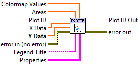
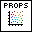

Scatter Plot¶
Make a scatter plot.
A scatter plot consists of a number of discrete data points represented by markers and not connected by lines. The only required input is Y Data; if X Data is not provided, integer values 0..N-1 will be used where N is the number of elements in Y Data.
By default, all markers have the same area, given by Marker.Size. To provide a specific area for each marker, supply a 1D array to Areas. The units for both Areas and Marker.Size are square points.
By default, all markers have the same color, taken from The Automatic Color Cycle. To use a colormap instead, supply a 1D array to the Colormap Values input and make sure Marker.Color is set to Automatic.

 Plot ID/Plot ID Out
Plot ID/Plot ID Out- Plot identifier. Plot ID Out always contains the same value as Plot ID.
 X Data
X Data- Optional X locations of the data points. Defaults to 0..N-1.
- Y Data
- Y locations of the data points.
- Areas
- Optional marker areas for each data element, in units of square points.
- Colormap Values
- Optional values to use when coloring the markers according to a colormap.
 Legend Title
Legend Title- Title to be displayed if a legend is added to the plot.
-  Properties
Property cluster, available under the “Properties” subpalette.
 Marker
MarkerControls the appearance of the data markers.
 Style
Style- Type of marker (circle, square, etc.). Default is to select an appropriate marker.
 Color
Color- Marker color. May be a PlotColor or LabView color.
 Size
Size- Area of marker, in square points.
- Line
Controls the appearance of the data marker edge lines.
- Style
- Line style (solid, dashed, etc.). Default is to automatically select an appropriate style.
- Color
- Line color. May be a PlotColor or LabView color.
- Width
- Line width, in font points (1/72 inch).
- Colormap
When a Colormap Value input is present, determines the colormap used to shade the markers.
- Map
- Colormap to use. See Colormaps for more info.
 Value Min
Value Min- Lower range for colormapped data; values smaller than this will all be plotted with the first color in the colormap.
- Value Max
- Upper range for colormapped data; values larger than this will all be plotted with the last color in the colormap.
- Scaling
- Colormap scaling mode. Currently only linear scaling is supported.
 Reverse
Reverse- Flip the colormap; for example, if a map has 0.0 as black and 1.0 as white, this will assign 0.0 as white and 1.0 as black.
- Display
Controls general appearance of the scatter plot.
- Alpha
- Alpha blending value for this object (0.0 to 1.0). Default is 1.0 (fully opaque).
- Z Order
- Stacking order. Default is chosen based on the object type.

 Error In/Out
Error In/Out- Terminals for standard error functionality.
Example¶
Download Scatter.vi,
or see Examples for a complete list of examples.
Errors¶
Other information¶
If Y Data is empty, this VI does nothing.
If an non-finite entry (NaN or Inf) appears in X Data, Y Data, Areas, or Colormap Values, the corresponding marker will not be displayed. If an entry in Areas is zero or negative, the corresponding marker will not be displayed.
If any of the inputs have mismatched sizes, only the overlapping portions will be displayed. If empty arrays are provided for X Data, Areas or Colormap Values, they will be ignored and the defaults used.
Zero values are permitted for Marker.Size and Line.Width. Negative values will be ignored, and the defaults used.